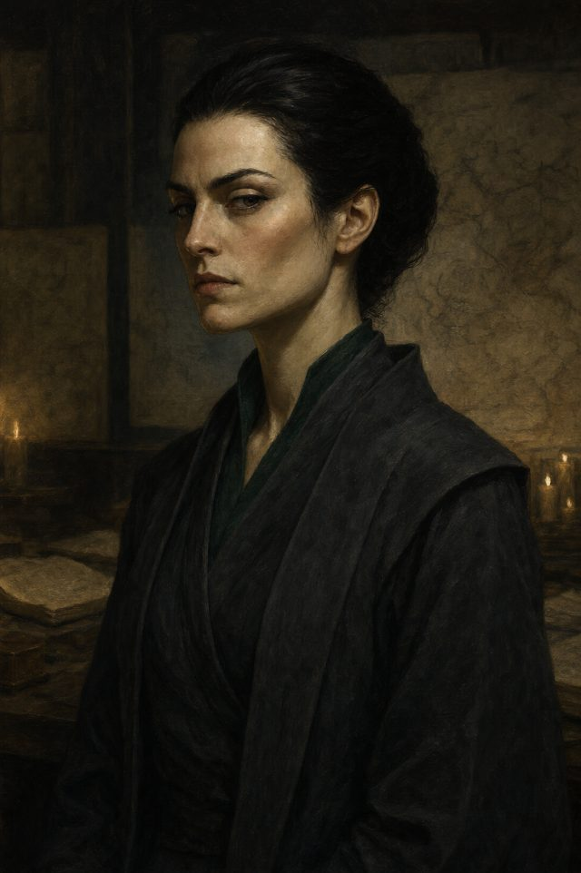
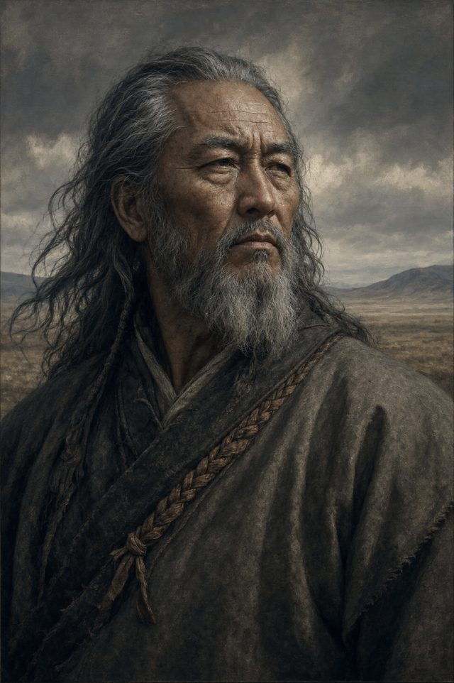
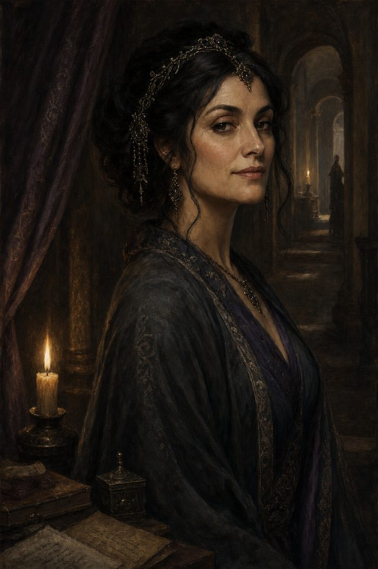
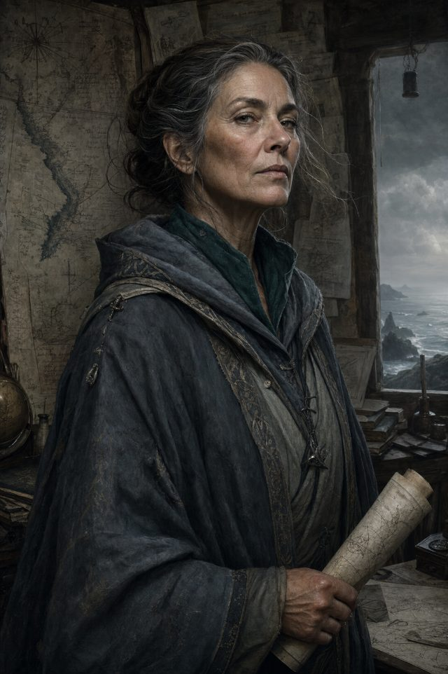
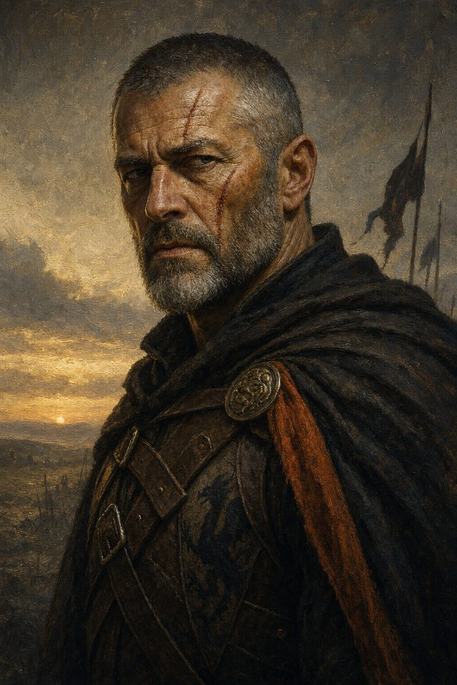
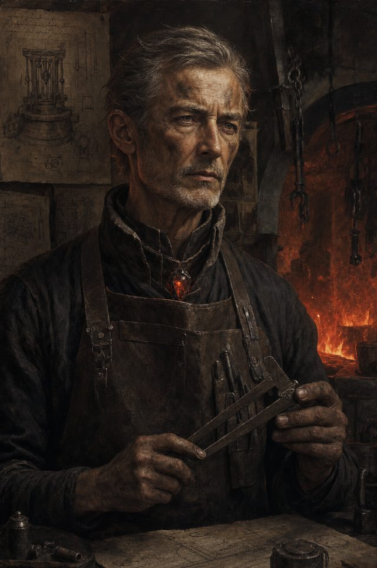
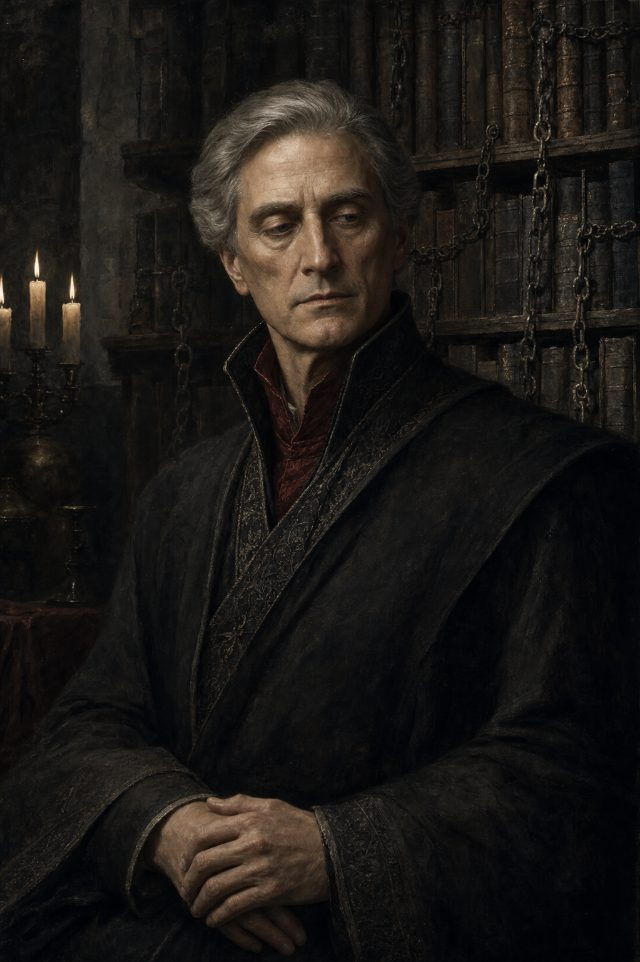
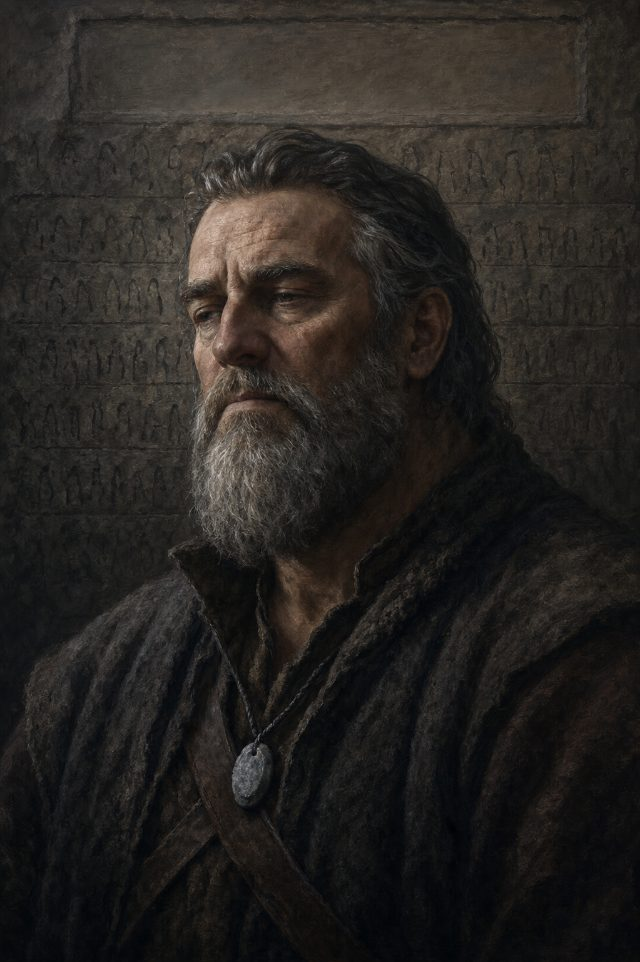

Sela
House Whitehart
The Called. In the high silent valleys, a goatherd hears a voice — or does not.
The people you will meet — recorded here without judgement, as the archive requires.
House Whitehart
The Called. In the high silent valleys, a goatherd hears a voice — or does not.

House Whitehart
The Tester. His house exists to test those who claim to hear; he carries his first doubt.

House Whitehart
Fifty years at the griffes. Head of the listening house.

House Blackthorn
Her father is the planner who always acts too late. Wren would act now.

House Ashbourne
He dreams of a Leap no rider survives.

House Blackcrest
Chronicler of the Clean Page — not made of lies; made of true things, chosen.

House Stonebear
Heir to a house being bankrupted by its own kept word.

The pragmatist whose first step is always honest.

House Stormrider
Unity holds only as long as the uniter lives. The Binder is dying.

House Ravenshade
All her power is borrowed, and the patron it is borrowed from is failing.

House Tidebreaker
Charts of everything, shared with no one; her lighthouse shines out over the empty sea.

House Phoenix
A house built on scorched ground that refuses, on principle, to look down.

House Ashbourne
Head of the house. The old rider who doubts what the Wall of Names cost.

House Ironvale
Head of the house that measured everything in the realm.

House Blackcrest
Head of the house, keeper of the Chronicle of Victory.

House Stonebear
Head of the house — entirely at peace with the cost of a kept word.